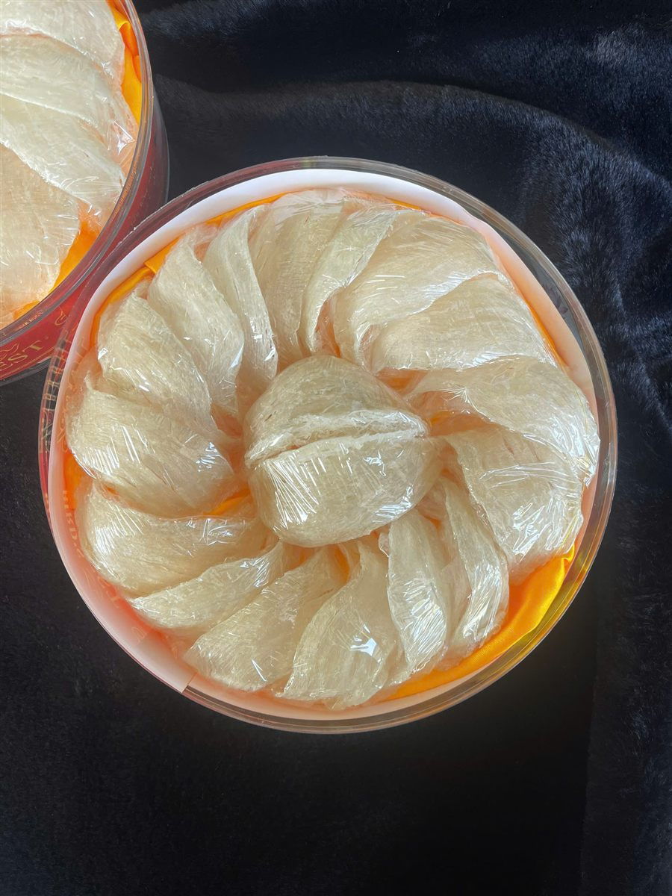
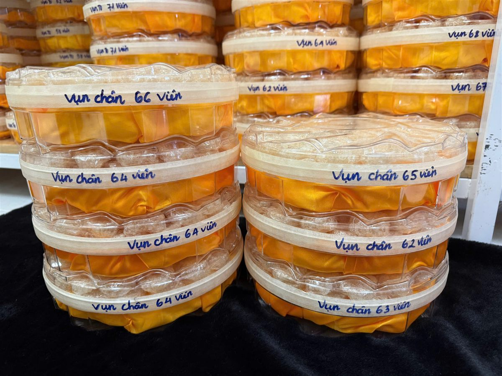

Giá Tổ Yến Phụ Thuộc Vào Những Yếu Tố Nào?
Yến Sào Lanest · Đăng ngày 16/10/2026

Hỏi giá tổ yến ở ba nơi, nhiều khi nhận về ba con số rất khác nhau, dù tên gọi nghe giống hệt. Lý do là cùng hai chữ "tổ yến" nhưng bên trong khác nhau ở nhiều thứ: đã làm sạch tới đâu, lấy phần nào của tổ, bao nhiêu phần là sợi, tay yến có nguyên vẹn không, mua vào mùa nào, và có đủ cân hay không. Bài này không đưa bảng giá, vì giá yến thô thay đổi theo thời vụ. Bài giúp anh chị hiểu vì sao giá chênh, để khi so giá là so đúng hai thứ giống nhau.
Tổ yến rút lông khô của Lanest: làm sạch bằng phun sương, vẫn giữ nguyên dáng tổ
1. Mức làm sạch: yến thô, tinh chế hay rút lông khô
Đây là yếu tố lớn nhất, vì mỗi bậc làm sạch là thêm công thợ.
- Yến thô mới qua sơ chế nhẹ bên ngoài. Người sáng lập Lanest mô tả: "yến thô là yến hái từ nhà yến về chỉ là làm sạch nhẹ nhàng bên ngoài như nhặt bớt lông chim yến, vỏ trứng, hay mài bớt phần không đẹp của tổ ra". Yến thô chưa phun sương, chưa ngâm nước nhặt lông, nên người mua phải tự ngâm 1–2 giờ rồi nhặt lông ở nhà.
- Yến tinh chế đã được ngâm mềm, nhặt sạch lông và tạp chất bằng tay. Ở Lanest, mỗi mẻ đi qua 4 lượt người: thợ nhặt, thợ đảo lại, thợ đắp, nhân viên kiểm tra cuối.
- Yến rút lông khô cao cấp được rút lông bằng phun sương, không ngâm nước, sạch 98–99% lông tơ, khô tự nhiên. Đây là dòng đứng đầu trong bảng giá tinh chế của Lanest.
Thêm một điều ít người để ý: làm sạch là loại bỏ lông, vỏ trứng, tạp chất. Phần bị nhặt ra không còn nằm trong hộp, nên cùng một khối lượng, yến đã làm sạch kỹ luôn là phần "tinh" hơn của nguyên liệu ban đầu.
2. Phần nào của tổ: tổ, chân, sợi non hay vụn
Một tổ yến không đồng đều từ trên xuống dưới. Mỗi phần cho ra một loại hàng khác:
| Phần tổ | Đặc điểm |
| Thân tổ (sợi) | Phần sợi yến nguyên vẹn, làm nên các dòng 100% sợi và thượng hạng |
| Chân yến | Phần gốc tổ bám vào vách nhà yến, dày và chắc nhất; đạm khoảng 55–60% khối lượng khô |
| Sợi non (xơ mướp bụng) | Phần bụng trong tổ, sợi mảnh, nhẹ |
| Vụn | Mảnh vụn sinh ra trong lúc tinh chế, được đắp tổ hoặc chia viên, vẫn là yến thật |
Yến vụn thường nằm ở cuối bảng giá. Lý do là hình thức sợi, không phải vì đó là yến kém hay yến giả.

Yến vụn chân được chia viên, mỗi hộp ghi tay số viên bên trong
3. Tỷ lệ sợi: cùng là tinh chế vẫn chia nhiều mức
Với yến tinh chế, tỷ lệ giữa sợi nguyên và xơ mướp bụng quyết định hàng nằm ở mức nào. Trong bảng giá tinh chế của Lanest, các loại xếp từ cao xuống thấp như sau:
- Yến rút lông khô cao cấp
- Yến tinh chế 100% sợi: toàn sợi yến, làm sạch hoàn toàn bằng tay, không pha vụn
- Yến tinh chế thượng hạng: 70% sợi, 30% xơ mướp bụng
- Yến tinh chế tiêu chuẩn: 50% sợi, 50% xơ mướp bụng
- Yến tinh chế sợi non (xơ mướp bụng)
- Yến tinh chế vụn (đắp tổ hoặc chia viên)
Vì vậy khi so giá giữa hai nơi, câu đầu tiên nên hỏi là: "Hàng này bao nhiêu phần trăm sợi?". So hộp 100% sợi với hộp 50/50 thì giá chênh là đương nhiên. Muốn hiểu kỹ từng loại, anh chị xem bài tổ yến thô và yến tinh chế khác nhau thế nào.
4. Tay yến: đầy, đều và không nứt
Cùng một loại, tay yến đẹp vẫn được chọn trước. Khi soi hàng ở xưởng, người sáng lập Lanest dặn thợ rất ngắn:
"Mấy cái tay nào nứt á đừng có lấy"
Tay được chọn là tay đầy, đều, không nứt. Về màu, có những tổ màu kem hoặc hơi cam vàng, đó là đặc tính tự nhiên chứ không phải hàng lỗi. Chỉ khi yến chuyển sang vàng đậm hoặc đỏ mới là dấu hiệu bị nhiễm, và hàng đó phải loại, không có chuyện "chữa" lại cho đẹp.
5. Thời vụ: vì sao giá yến thô không cố định
Giá tổ yến thô và chân yến thô thay đổi theo thời vụ. Đó là lý do trên website Lanest, hai mặt hàng này để "Liên hệ" thay vì ghi một con số cố định quanh năm. Nếu anh chị thấy một nơi niêm yết giá yến thô không đổi suốt năm, nên hỏi thêm giá đó áp dụng cho thời điểm nào.
6. Đủ cân hay không: phần giá không nhìn thấy
Hai hộp cùng ghi 100g, cùng một mức giá, chưa chắc đã có cùng lượng yến. Người sáng lập Lanest từng mua 100g yến tinh chế qua tay một đối tác, đem ngâm ra rồi sấy khô lại để cân:
"khi mà mình ngâm ra mình sấy lại thì nó chỉ còn có 84 g thôi. Tức là người ta làm ăn gian dối với mình á"
Thiếu 16g nghĩa là giá thật của mỗi gam yến cao hơn giá ghi trên hộp. Ngoài thiếu cân còn có độn để tăng trọng lượng và tẩy trắng cho sợi trông đẹp hơn. Từ lần đó, Lanest tự làm với đội thợ riêng và giữ ba điều: không tẩy trắng, không độn, không "chữa" hàng không đạt. Một mẹo đơn giản từ cẩm nang của Lanest: tránh sản phẩm không rõ xuất xứ hoặc giá rẻ bất thường so với mặt bằng chung. Cách nhận biết sợi yến thật, anh chị xem bài phân biệt yến sào thật giả.
Câu hỏi thường gặp
Vì sao Lanest không ghi giá cố định cho tổ yến thô?
Vì giá yến thô thay đổi theo thời vụ. Anh chị gọi 0258 6278 627 hoặc nhắn fanpage Yến Sào Lanest để được báo giá đang áp dụng.
Yến vụn rẻ hơn thì có kém chất lượng không?
Không. Yến vụn là mảnh vụn sinh ra trong lúc tinh chế, được đắp tổ hoặc chia viên, vẫn là yến thật. Giá thấp hơn vì hình thức sợi, không phải vì là hàng kém.
Làm sao biết yến mình mua có đủ cân?
Cách người sáng lập Lanest từng làm: lấy một phần yến tinh chế ngâm ra, sấy khô lại rồi cân. Ngoài ra nên mua nơi có giấy kiểm nghiệm, tem và mã truy xuất nguồn gốc.